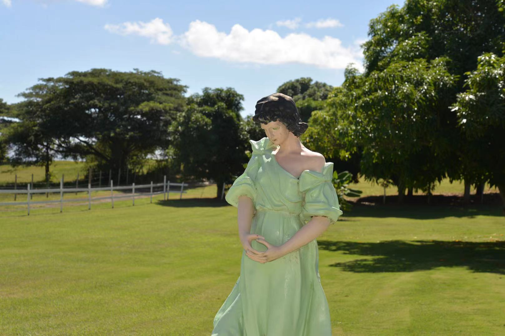

Puerto Rico
Puerto Rico was where I went during Thanksgiving break. I really like the weather, colorful buildings, and tasty ice creams there. Puerto Rico offers the perfect balance between tranquil retreat and rum-soaked nightlife. As far as beaches go, it doesn’t get better than the sands of Isla de Vieques—particularly Mosquito Bay, where by moonlight the water glows blue-green thanks to bioluminescent microorganisms. When I posted my photos on Instagram, someone asked me if it was Spain. They does look similar.


San Antonio — Romance to death
There was another group of people on the boat with us. Maybe they were little nuns from The Sound of Music. When the boat turned a corner and lost the shade of greenery, the sun came straight in, and they stretched out their hands to block it. In the distant light, they were all bright.


River Walk was where I felt the most romance concentrated. The moment I got off the boat and stepped onto the stony ground, all the romance within me was awakened. I thought of the person who haunts me in my dreams. I wanted to take his hand and walk between the taverns on the banks of the river, as if running in the fields in August, free, peaceful, excited, and some other feelings that wanted to share.


Beijing — Your presence gives meaning to the whole city
‘I often feel that this ancient garden has a sense of destiny: as if it was just to wait for me, and it has been waiting there for more than 400 years through vicissitudes. Within the 400 years, it stripped off the exaggerated glaze on the eaves of the ancient temples, faded the vermilion that was showing off on the door wall and collapsed sections of high walls and scattered jade fences. The old cypress trees around the altar are getting darker. Weeds and vines that can be seen everywhere also becomes magnanimously lush. In the quiet light that fills the garden, it is easier for a person to see the time and her true self.'--Tiesheng Shi[Myself and Earth-God Altar]

I was initially curious about this place because of a special person. At the time, I thought he was different from anyone else. Like a fairy who has fallen into the mundane world. There are too many words to describe him, so I came here to visit, trying to find out what kind of fairyland the fairy grew up in. Although in the end I found out that everything was just an illusion. Before leaving, I said to myself: flower is yesterday's flower; your dream is a future dream. See you when the flowers bloom.